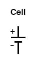
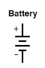
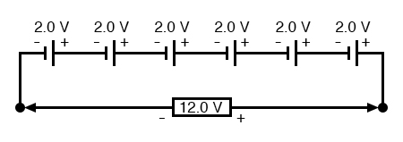
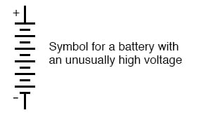
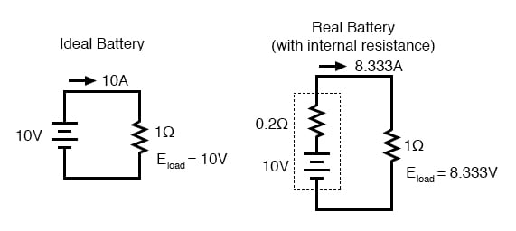
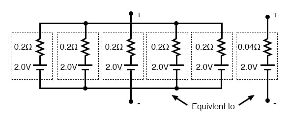

The word battery simply means a group of similar components. In military vocabulary, a “battery” refers to a cluster of guns. In electricity, a “battery” is a set of voltaic cells designed to provide greater voltage and/or current than is possible with one cell alone.
The symbol for a cell is very simple, consisting of one long line and one short line, parallel to each other, with connecting wires:

The symbol for a battery is nothing more than a couple of cell symbols stacked in series:

As was stated before, the voltage produced by any particular kind of cell is determined strictly by the chemistry of that cell type. The size of the cell is irrelevant to its voltage. To obtain greater voltage than the output of a single cell, multiple cells must be connected in series. The total voltage of a battery is the sum of all cell voltages. A typical automotive lead-acid battery has six cells, for a nominal voltage output of 6 x 2.0 or 12.0 volts:

The cells in an automotive battery are contained within the same hard rubber housing, connected together with thick, lead bars instead of wires. The electrodes and electrolyte solutions for each cell are contained in separate, partitioned sections of the battery case. In large batteries, the electrodes commonly take the shape of thin metal grids or plates and are often referred to as plates instead of electrodes.
For the sake of convenience, battery symbols are usually limited to four lines, alternating long/short, although the real battery it represents may have many more cells than that. On occasion, however, you might come across a symbol for a battery with unusually high voltage, intentionally drawn with extra lines. The lines, of course, are representative of the individual cell plates:

If the physical size of a cell has no impact on its voltage, then what does it affect? The answer is resistance, which in turn affects the maximum amount of current that a cell can provide. Every voltaic cell contains some amount of internal resistance due to the electrodes and the electrolyte. The larger a cell is constructed, the greater the electrode contact area with the electrolyte, and thus the less internal resistance it will have.
Although we generally consider a cell or battery in a circuit to be a perfect source of voltage (absolutely constant), the current through it dictated solely by the external resistance of the circuit to which it is attached, this is not entirely true in real life. Since every cell or battery contains some internal resistance, that resistance must affect the current in any given circuit:

The real battery shown above within the dotted lines has an internal resistance of 0.2 Ω, which affects its ability to supply current to the load resistance of 1 Ω. The ideal battery on the left has no internal resistance, and so our Ohm’s Law calculations for current (I=E/R) give us a perfect value of 10 amps for current with the 1-ohm load and 10 volt supply. The real battery, with its built-in resistance, further impeding the flow of current, can only supply 8.333 amps to the same resistance load.
The ideal battery, in a short circuit with 0 Ω resistance, would be able to supply an infinite amount of current. The real battery, on the other hand, can only supply 50 amps (10 volts / 0.2 Ω) to a short circuit of 0 Ω resistance, due to its internal resistance. The chemical reaction inside the cell may still be providing exactly 10 volts, but the voltage is dropped across that internal resistance as current flows through the battery, which reduces the amount of voltage available at the battery terminals to the load.
Since we live in an imperfect world, with imperfect batteries, we need to understand the implications of factors such as internal resistance. Typically, batteries are placed in applications where their internal resistance is negligible compared to that of the circuit load (where their short-circuit current far exceeds their usual load current), and so the performance is very close to that of an ideal voltage source.
If we need to construct a battery with lower resistance than what one cell can provide (for greater current capacity), we will have to connect the cells together in parallel:

Essentially, what we have done here is to determine the Thevenin equivalent of the five cells in parallel (an equivalent network of one voltage source and one series resistance). The equivalent network has the same source voltage but a fraction of the resistance of any individual cell in the original network. The overall effect of connecting cells in parallel is to decrease the equivalent internal resistance, just as resistors in parallel diminish in total resistance. The equivalent internal resistance of this battery of 5 cells is 1/5 that of each individual cell. The overall voltage stays the same: 2.0 volts. If this battery of cells were powering a circuit, the current through each cell would be 1/5 of the total circuit current, due to the equal split of current through equal-resistance parallel branches.
REVIEW: